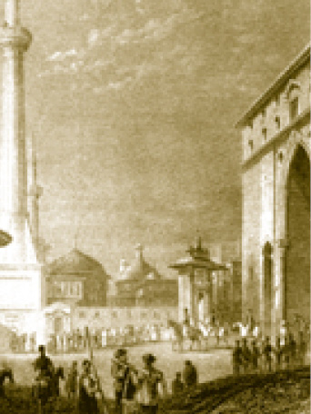

DİVAN MEYDANI’NDA YAPILAN MERASİMLER
Ulûfe Dağıtımı
Divan Meydanı’nda yapılan merasimlerin en meşhuru ulûfe dağıtımıdır. Her üç ayda bir yeniçeriler bu meydanı doldurur ve maaşları olan ulûfelerini alırlardı. O zaman buradaki çekilen gülbank, yeri göğü inletirdi ve o günlerde başkentteki yabancı elçilerin sarayda bulunmalarına dikkat edilir, davetlilere Osmanlının askerî gücü teşhir edilirdi. Askere çorba ikram edilir, çorba içilirse maaşlar yani ulûfe dağıtılmaya başlanır. İçilmezse isyan alâmetidir. Birinci ortanın bir numaralı neferi padişahın kendisidir. Çok ilginç bir ananedir, bütün ortaların ulûfeleri üç ayda bir bu şekilde dağıtılırdı. Kanuni Sultan Süleyman Han döneminde sefer zamanlarında askerlerin şevkini artırmak için pilav, yahni ve zerde ikram edilmesi geleneğinden ilhamla ulûfe dağıtımı sırasında çorba, pilav ve zerde ikram edilmeye başlanmıştır.
Merasimle Dış Hazine’den getirilen ulûfe keseleri askerlere paylaştırılmadan evvel güzel bir Osmanlı geleneği ile fakir halka dağıtılacak sadakalar ayrılır ve ondan sonra ulûfe dağıtımı başlardı.
Avluya bazen ayak direyen, padişahla görüşmek için gelen yeniçeriler de doluşurdu. Osmanlı tarihinin nahoş sayfalarıdır.
Elçi Kabulleri
Ulûfe dağıtımı dışında elçi kabulleri de bu meydanda yapılırdı. Avlunun sağ tarafına yeniçeriler, sol tarafına sipahiler mutantan bir düzenle dizilirler ve gösterişli duruşları ile gelen elçilik heyetini kendilerine hayran bırakırlardı. Revaklara halılar ve diğer değerli kumaşlar asılır, saraydaki aslanlar ve kaplanlar dolaştırılırdı. Yapılan uygulamalar bir güç gösterisiydi. Dosta güven veren, düşmanı ürküten bir devletin varlığı gösterilmeye çalışılırdı. Elçilerin getirdikleri hediyeler de Bâbü’s saade’nin sol yanında teşhir edilirdi. Gelen heyeti Kubbealtı önünde sadrazam başkanlığındaki vezirler heyeti karşılardı. Padişahlar hiçbir zaman elçi karşılamak için dışarı çıkmazlardı. Padişahların her gelen elçiyi huzurlarına kabul etmek gibi bir zorunluluğu da yoktu. Padişah gelen elçiyi kabul edecekse elçi Arz Odası’na alınırdı. Görüşme Arz Odası’nda yapılırdı.
Kubbealtı’nda sadrazamın elçi ile yediği öğle yemeği
Jean Baptist Hilaire (Tableu Générale)
Baklava Alayı
Baklava Alayı, Topkapı’da ramazan hayatının güzel bir misalidir. Padişahın askerlerine ramazan ikramıdır.
Baklavalar, Matbah-ı amire’de hazırlanırdı. Yeniçeri, sipahi, topçu ve cebeci gibi kapıkulu askerinin her on neferine bir tepsi hesabıyla hazırlanan baklava sinileri futalarına (örtülere) sarılmış olarak Matbah-ı amire önüne dizilirdi. Bu sinilerin ilkini, Silahdar ağa ve maiyyeti, bir numaralı yeniçeri olan padişah adına teslim aldıktan sonra, diğer ortalardan gelen ikişer nefer birer siniyi herhangi bir kargaşaya mahal bırakmadan yüklenirdi. Her bölüğün usta, saka, mütevelli, odabaşı gibi amirleri önde, baklava sinileriyle yürüyenler arkada, açılan kapıdan dışarı çıkarlar, baklava alayı gulgule ve nümayiş ile Divanyolu’nda kendilerini seyretmek için karşılıklı sıralanmış halkın arasından alkış ile kışlalara yürürdü. Sini ve futalar ise ertesi gün Matbah-ı amire’ye iade edilirdi.
Son dönemlerinde bozulup kuru gürültü hâline gelen Baklava Alayı törenlerinde, sini ve futalar iade edilmez olmuş, buna gerekçe olarak da “Baklava o kadar lezzetliydi ki sini ve futaları da yedik.” gibi laubalilikler olmuştur. Baklava Alayı, nasıl son bulursa bulsun, hep o Osmanlı İstanbul’una has törenlerden biri olarak hatırlanacaktır.
Matbah-ı amire’de bir çini tabak

Divan toplantıları, Ayasofya’da üyelerin sabah namazını kılmalarından sonra başlar.
Gravürde Bab-ı Hümâyûn üzerinde bulunup da günümüze ulaşamayan köşk de görülmektedir.